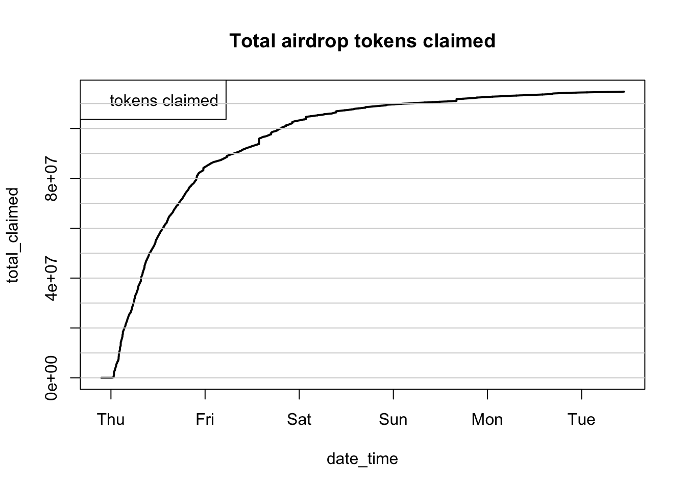
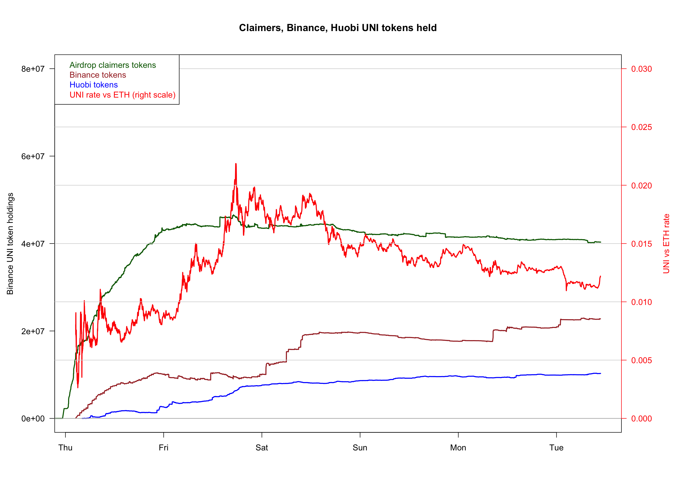

Uniswap UNI token transactions analysis
Timothée Henry
September 22nd, 2020
Objective
The UNI token was introduced on 17th Septembre 2020 Refer to the Uniswap blog post for details: https://uniswap.org/blog/uni/
The objective of this page is to analyze the UNI token transactions, and try to understand what is driving its price.
For this we will try to answer the following questions:
- Question 1: who are the main holders?
- Question 2: what percentage of the airdrop was claimed so far?
- Question 3: did the receivers of airdrop keep their tokens?
- Question 4: which are the main exchanges?
- Question 5: who are the main buyers and sellers?
- Question 6: what is driving the price?
Data source
The following queries were used:
To get token transfers on token UNI (0x1f9840a85d5af5bf1d1762f925bdaddc4201f984) https://etherscan.io/address/0x1f9840a85d5af5bf1d1762f925bdaddc4201f984
SELECT * FROM bigquery-public-data.crypto_ethereum.token_transfers
WHERE token_address = "0x1f9840a85d5af5bf1d1762f925bdaddc4201f984"and to get swaps on the ETH-UNI Uniswap exchange (contract 0xd3d2e2692501a5c9ca623199d38826e513033a17) https://uniswap.info/pair/0xd3d2e2692501a5c9ca623199d38826e513033a17 https://etherscan.io/address/0xd3d2e2692501a5c9ca623199d38826e513033a17
SELECT * FROM blockchain-etl.ethereum_uniswap.UniswapV2Pair_event_Swap
where contract_address = "0xd3d2e2692501a5c9ca623199d38826e513033a17"require(data.table)## Loading required package: data.table## Warning: package 'data.table' was built under R version 3.5.2library(zoo)##
## Attaching package: 'zoo'## The following objects are masked from 'package:base':
##
## as.Date, as.Date.numerict = fread("/Users/henry/Desktop/perso/eth/uniswap/uniswap/uni_transactions_22sep.csv")
s = fread("/Users/henry/Desktop/perso/eth/uniswap/uniswap/uni_swaps_22sep.csv")
# convert time
s[, date_time_str := substr(block_timestamp, 1, 16)]
#t[, date_time := strptime(date_time_str, "%Y-%m-%d %H:%M")]
s[, date_time := as.POSIXct(date_time_str, "%Y-%m-%d %H:%M", tz = "GMT")]
s = s[order(date_time)]
s[, amount0In := as.numeric(amount0In) / 1e18]
s[, amount1In := as.numeric(amount1In) / 1e18]
s[, amount0Out := as.numeric(amount0Out) / 1e18]
s[, amount1Out := as.numeric(amount1Out) / 1e18]
s = s[, list(date_time, amount0In, amount1In, amount0Out, amount1Out)]
# deduce UNI/ETH conversion rate
s[amount0In != 0, r1 := amount1Out / amount0In]
s[amount0In != 0, volume := amount1Out]
s[amount0Out != 0, r1 := amount1In / amount0Out]
s[amount0Out != 0, volume := amount1In]
#s[, r1_mavg := frollmean(r1, 300)]
s[, r1_mavg := frollsum(r1 * volume, 50) / frollsum(volume, 50)]
# simplify value as numeric in token
t[, value := as.numeric(value) / 1e18]
# keep only useful columns
t = t[, list(block_timestamp, value, from_address, to_address)]
# convert time
t[, date_time_str := substr(block_timestamp, 1, 16)]
#t[, date_time := strptime(date_time_str, "%Y-%m-%d %H:%M")]
t[, date_time := as.POSIXct(date_time_str, "%Y-%m-%d %H:%M", tz = "GMT")]
t = t[, list(date_time, value, from_address, to_address)]
t = t[order(date_time)]Question 1: who are the main holders?
This question is answered in the following etherscan page: https://etherscan.io/token/0x1f9840a85d5af5bf1d1762f925bdaddc4201f984#balances
But we can check this by ourselves:
t_from = t[, list(date_time, address = from_address, value = -value)]
t_to = t[, list(date_time, address = to_address, value)]
balance = rbind(t_to, t_from)
balance = balance[order(date_time)]
balance[, list(Quantity = sum(value)), by=address][order(-Quantity)][1:10]## address Quantity
## 1: 0x4750c43867ef5f89869132eccf19b9b6c4286e1a 172000000
## 2: 0xe3953d9d317b834592ab58ab2c7a6ad22b54075d 129000000
## 3: 0x4b4e140d1f131fdad6fb59c13af796fd194e4135 86000000
## 4: 0x662d905a1795ffdf8cfab0abe670dbff3a9fd247 64000000
## 5: 0x3d30b1ab88d487b0f3061f40de76845bec3f1e94 43000000
## 6: 0x9f41cecc435101045ea9f41d4ee8c5353f77e5d5 39761682
## 7: 0x090d4613473dee047c3f2706764f49e0821d256e 35223549
## 8: 0x33ead8e168c54a3e3bab3cf109f69e906351db35 30000000
## 9: 0xbac8f2448239f371eb793b83b82945bfac741ae0 30000000
## 10: 0x5518c31f4a22782e5a7046711facf985985530c7 30000000Question 2: what percentage of the airdrop was claimed so far?
From the blog post (https://uniswap.org/blog/uni/), we know 150 million UNIs are available to be claimed: “15% of UNI 150,000,000 UNI can immediately be claimed by historical liquidity providers, users, and SOCKS redeemers/holders based on a snapshot ending September 1, 2020, at 12:00 am UTC.”
t[value==150000000]## date_time value from_address
## 1: 2020-09-16 20:08:00 1.5e+08 0x41653c7d61609d856f29355e404f310ec4142cfb
## to_address
## 1: 0x090d4613473dee047c3f2706764f49e0821d256et[from_address=="0x090d4613473dee047c3f2706764f49e0821d256e", sum(value)]## [1] 114777651How does it look over time? Are we reaching a plateau, with the rest of the claims remaining forgotten?
cg = t[from_address=="0x090d4613473dee047c3f2706764f49e0821d256e", sum(value), by=date_time][, list(date_time, total_claimed = cumsum(V1))]
cg[, plot(date_time, total_claimed, type="l", lwd=2, main="Total airdrop tokens claimed")]## NULLlegend( "topleft", c("tokens claimed"), text.col=c("black") )
for(i in 0:15) abline(h=i*1e7, col="lightgray")
The claims are “plateauing”, although there remains about 23% unclaimed.
This can also be checked on etherscan here: https://etherscan.io/token/0x1f9840a85d5af5bf1d1762f925bdaddc4201f984?a=0x090d4613473dee047c3f2706764f49e0821d256e#tokenAnalytics
Question 3: did the receivers of airdrop keep their tokens?
claimers_addresses = t[from_address=="0x090d4613473dee047c3f2706764f49e0821d256e", to_address]
length(claimers_addresses)## [1] 187188# we need to remove Binance and Huobi from the list, in case they are claimers
claimers_addresses = claimers_addresses[claimers_addresses != "0x3f5ce5fbfe3e9af3971dd833d26ba9b5c936f0be"] # Binance
claimers_addresses = claimers_addresses[claimers_addresses != "0xe93381fb4c4f14bda253907b18fad305d799241a"] # Huobi
claimers_addresses = claimers_addresses[claimers_addresses != "0x6cc5f688a315f3dc28a7781717a9a798a59fda7b"] # OKEx
length(claimers_addresses)## [1] 187187claimers_trades = t[(to_address %in% claimers_addresses) | (from_address %in% claimers_addresses)]
claimers_trades[(to_address %in% claimers_addresses), value_dir := value]
claimers_trades[(from_address %in% claimers_addresses), value_dir := - value]
claimers_trades[(to_address %in% claimers_addresses) & (from_address %in% claimers_addresses), value_dir := 0]
ctg = claimers_trades[, list(value = sum(value_dir)), by=date_time][order(date_time)]
ctg[, token_count := cumsum(value)]
# Plot
cg[, plot(date_time, total_claimed, type="l", lwd = 2, main="Claimers tokens holdings")]## NULLctg[, lines(date_time, token_count, type="l", col = "blue", lwd = 2)]## NULLlegend( "topleft", c("tokens claimed", "tokens kept"), text.col=c("black", "blue") )
for(i in 0:15) abline(h=i*1e7, col="lightgray")At this time, claimers of the airdrop have kept (as a group) about 35% of the 115 millions tokens they have claimed. They were net sellers of token during the first two or three days; since then they seem to be about neutral (as a group).
Question 4: which are the main exchanges?
Question 5: who are the main buyers and sellers?
top_to = t[, list(.N, total_tokens_to = sum(value)), by=to_address][order(-total_tokens_to)][N>10][1:5]
top_to$comment = c("Uniswap ETH-UNI pool", "Binance", "Huobi 10", "?","OKEx")
top_to## to_address N total_tokens_to
## 1: 0xd3d2e2692501a5c9ca623199d38826e513033a17 116136 98508771
## 2: 0x3f5ce5fbfe3e9af3971dd833d26ba9b5c936f0be 29276 45340240
## 3: 0xe93381fb4c4f14bda253907b18fad305d799241a 8646 21273968
## 4: 0xe89a6d0509faf730bd707bf868d9a2a744a363c7 577 6869884
## 5: 0x6cc5f688a315f3dc28a7781717a9a798a59fda7b 764 4877839
## comment
## 1: Uniswap ETH-UNI pool
## 2: Binance
## 3: Huobi 10
## 4: ?
## 5: OKExtop_from = t[, list(.N, total_tokens_from = sum(value)), by=from_address][order(-total_tokens_from)][N>10][1:5]
top_from$comment = c("Uniswap", "Uniswap: Token Distributor", "Uniswap ETH-UNI pool", "Binance","Huobi 10")
top_from## from_address N total_tokens_from
## 1: 0x8fdb3816fe10e16aaa9b12b3c4688c873efe2eca 84 400000000
## 2: 0x090d4613473dee047c3f2706764f49e0821d256e 187188 114777651
## 3: 0xd3d2e2692501a5c9ca623199d38826e513033a17 42709 92736326
## 4: 0x3f5ce5fbfe3e9af3971dd833d26ba9b5c936f0be 7194 22566587
## 5: 0xe93381fb4c4f14bda253907b18fad305d799241a 2342 10990342
## comment
## 1: Uniswap
## 2: Uniswap: Token Distributor
## 3: Uniswap ETH-UNI pool
## 4: Binance
## 5: Huobi 10top_addresses_to = t[, .N, by=to_address][order(-N), to_address][1:5]
top_addresses_from = t[, .N, by=from_address][order(-N), from_address][1:5]
top_addresses = unique(c(top_addresses_to, top_addresses_from))
top_addresses## [1] "0xd3d2e2692501a5c9ca623199d38826e513033a17"
## [2] "0x3f5ce5fbfe3e9af3971dd833d26ba9b5c936f0be"
## [3] "0xe93381fb4c4f14bda253907b18fad305d799241a"
## [4] "0x5ac13261c181a9c3938bfe1b649e65d10f98566b"
## [5] "0x7a250d5630b4cf539739df2c5dacb4c659f2488d"
## [6] "0x090d4613473dee047c3f2706764f49e0821d256e"The top buyers and sellers are: the Uniswap ETH-UNI pool, Binance, Huobi, ?, OKEx.
Question 6: what is driving the price? (ongoing)
# -------------
## Binance trades
# -------------
# We focus on Binance trades, and calculate the cumulative sum of tokens boughts, over time.
binance_trades = t[(to_address=="0x3f5ce5fbfe3e9af3971dd833d26ba9b5c936f0be") | (from_address=="0x3f5ce5fbfe3e9af3971dd833d26ba9b5c936f0be")]
binance_trades[to_address=="0x3f5ce5fbfe3e9af3971dd833d26ba9b5c936f0be", value_dir := value]
binance_trades[from_address=="0x3f5ce5fbfe3e9af3971dd833d26ba9b5c936f0be", value_dir := - value]
bg = binance_trades[, list(value = sum(value_dir)), by=date_time][order(date_time)]
bg[, token_count := cumsum(value)]
# ----------
# Plot
## add extra space to right margin of plot within frame
par(mar=c(5, 4, 4, 6) + 1.5)
bg[, plot(date_time, token_count, col="black", type = "l", xlab="", ylab="", #axes=FALSE,
main="Binance UNI tokens held",las=1)]## NULL#axis(2, ylim=c(0,1),col="black",las=1) ## las=1 makes horizontal labels
mtext("Binance UNI token holdings",side=2,line=4)
abline(h=0)
## Allow a second plot on the same graph
par(new=TRUE)
s[!is.na(r1_mavg), list(r1_mavg = mean(r1_mavg)), by=date_time][, plot(date_time, r1_mavg, xlab="", ylab="",
ylim=c(0, 0.03),
type="l",
col = "red", axes=FALSE)]## NULLfor(i in 0:10) abline(h=i*0.005, col="lightgray")
mtext("UNI vs ETH rate", side=4, col="red", line=4)
axis(4, col="red",col.axis="red",las=1)
# -------------
## Huobi trades
# -------------
huobi_trades = t[(to_address=="0xe93381fb4c4f14bda253907b18fad305d799241a") | (from_address=="0xe93381fb4c4f14bda253907b18fad305d799241a")]
huobi_trades[to_address=="0xe93381fb4c4f14bda253907b18fad305d799241a", value_dir := value]
huobi_trades[from_address=="0xe93381fb4c4f14bda253907b18fad305d799241a", value_dir := - value]
hg = huobi_trades[, list(value = sum(value_dir)), by=date_time][order(date_time)]
hg[, token_count := cumsum(value)]We will try to show the major token traders activities in one graph together with the token price fluctuation.
# ----------
# Plot
## add extra space to right margin of plot within frame
par(mar=c(5, 4, 4, 6) + 1.5)
# Binance
bg[, plot(date_time, token_count, col="brown", lwd=2, type = "l", xlab="", ylab="", main="Claimers, Binance, Huobi UNI tokens held",las=1, ylim=c(0,80e6))]## NULL# Huobi
hg[, lines(date_time, token_count, col="blue", lwd=2, type = "l", xlab="", ylab="", las=1)]## NULL# Token claimers (as a group)
ctg[, lines(date_time, token_count, col="darkgreen", lwd=2, type = "l", xlab="", ylab="", las=1)]## NULLmtext("Binance UNI token holdings",side=2,line=4)
abline(h=0)
## Allow a second plot on the same graph, for the token price (in ETH)
par(new=TRUE)
sf = s[!is.na(r1_mavg)]
sf[400:nrow(sf), list(r1_mavg = mean(r1_mavg)), by=date_time][, plot(date_time, r1_mavg, xlab="", ylab="",
ylim=c(0, 0.03),
lwd=2,
type="l",
col = "red", axes=FALSE)]## NULLfor(i in 0:10) abline(h=i*0.005, col="lightgray")
mtext("UNI vs ETH rate", side=4, col="red", line=4)
axis(4, col="red",col.axis="red",las=1)
legend( "topleft", c("Airdrop claimers tokens", "Binance tokens", "Huobi tokens", "UNI rate vs ETH (right scale)"),
text.col=c("darkgreen", "brown", "blue", "red") )
The graph is interesting, but the claimers holdings are misleading because they actually were net sellers of tokens, at times. We should plot instead the net change of holdings of each group, without counting the original claims which were free and could not impact the price in the market.
Let’s calculate the net change of holdings for each group:
# Binance
bg[, netchange100 := frollsum(value, 100)]
# Huobi
hg[, netchange100 := frollsum(value, 100)]
# Claimers
# we need to remove the original claims
ctg = claimers_trades[from_address !="0x090d4613473dee047c3f2706764f49e0821d256e", list(value = sum(value_dir)), by=date_time][order(date_time)]
ctg[, netchange100 := frollsum(value, 100)]
# Plot
## add extra space to right margin of plot within frame
par(mar=c(5, 4, 4, 6) + 1.5)
# Binance
bg[, plot(date_time, netchange100, col="brown", lwd=2, type = "l", xlab="", ylab="", main="Claimers, Binance, Huobi UNI tokens held",las=1, ylim=c(-6e6,6e6))]## NULL# Huobi
hg[, lines(date_time, netchange100, col="blue", lwd=2, type = "l", xlab="", ylab="", las=1)]## NULL# Token claimers (as a group)
ctg[, lines(date_time, netchange100, col="darkgreen", lwd=2, type = "l", xlab="", ylab="", las=1)]## NULLmtext("UNI token holdings",side=2,line=4)
abline(h=0, col="black", lwd=2)
## Allow a second plot on the same graph, for the token price (in ETH)
par(new=TRUE)
sf = s[!is.na(r1_mavg)]
sf[400:nrow(sf), list(r1_mavg = mean(r1_mavg)), by=date_time][, plot(date_time, r1_mavg, xlab="", ylab="",
ylim=c(0, 0.03),
lwd=2,
type="l",
col = "red", axes=FALSE)]## NULLfor(i in 0:10) abline(h=i*0.005, col="lightgray")
mtext("UNI vs ETH rate", side=4, col="red", line=4)
axis(4, col="red",col.axis="red",las=1)
legend( "topleft", c("Airdrop claimers tokens", "Binance tokens", "Huobi tokens", "UNI rate vs ETH (right scale)"),
text.col=c("darkgreen", "brown", "blue", "red") )
The analysis of net changes among the top buyers and sellers of tokens suggests the following events (although the analysis is not complete since we only focused on the top 3 groups of buyers and sellers of tokens):
17th-18th September 2020: huge volume of claimers of tokens, who unloaded 50% of the tokens to the markets. Binance and Huobi bought most of the tokens available. Price went up.
19th September 2020: claims are slowing down. By the end of the day, Binance and Huobi stopped buying, and the claimers were still net sellers. The price started dropping.
20th September 2020: volume of trades reduced a lot. Few buyers, and claimers are still net sellers. Price drops further.
- 21st September 2020: price still going down, although it is not clear what drives the price. This would need further investigation.
This is the end of the analysis for now.
Thank you. Fo any question or comment, send me an email at timothee.henry@gmail.com